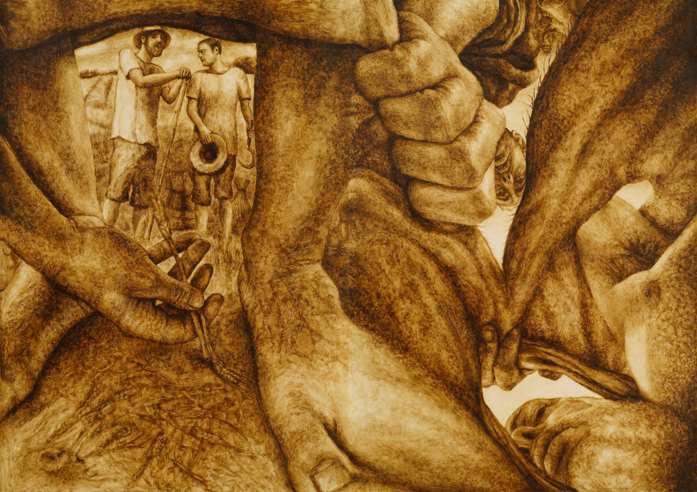

Project Philosophy
Coupling the Selfie Culture with the Sistine Chapel
The project aims to re-represent classical art history themes via smartphone camera perspectives - specifically the perspectives of the figures inside the scene. To me, the shift from an objective point of view outside of the scene to that of a subjective observer from within the scene, can be seen as the visual language analogue to Kant's Copernican revolution, and has been a major step in my visual thinking.
Time for Synthesis
It is my belief that following the great historical shift from the old masters to a stage of rebellious antithesis in modern art, the next stage is a synthesis between the old painting values - such as major traditional cultural themes and figurativity, to modern values - such as innovative representation and subversive content. As Hegel has taught us, these have always been the stages of cultural development: after the thesis and the antithesis - comes the synthesis. This strive for synthesis differentiates this project from both the current art-world mainstream and reactionary "going backwards" figurative art.
Return of the Big Story
The project is an ever-growing painting-snake and it will be extended through further historical eras. The era to follow the biblical themes is the Greek world. Nowadays, technological and political history has become the dominant image to represent the human story in our imagination. Contrary to this image, I chose to represent the story of humanity through cultural history and its big myths, thus offering a humanistic "big picture" of the "big story".
Subjectivity of the Viewer
Following an era which celebrated the subjectivity of the artist, this project emphasizes the subjectivity of the viewer, and their identification with the character's point-of-view. By walking along the project, the viewer is positioned both in the man's, the woman's and the snake's points-of-view in the Original Sin of sexuality, and sees conflicts from both sides, such as in the old and young brother’s sides in the first murder. The viewer sees the father sacrificing his son from the perspectives of Abraham, Isaac, the saving angel and of the final sacrifice - the ram. They get seduced in bed by Potiphar's wife, sees themself blinded with a knife as Samson, and breaks god’s tablets with fury as Moses. Thus, the viewer becomes the ever-changing hero of the mythical drama, finding themself in the shoes of murderers, saints, ancient prostitutes, prophets, spies and animals.
